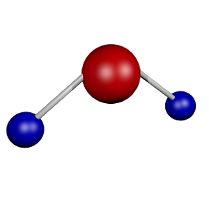

Escritura del primer borrador
La escritura de este primer borrador servirá para definir el marco del texto final y será poco guiada. Cuando sea esta una actividad poco frecuente en la trayectoria del alumnado es importante cuidar el aspecto emocional y valorar muy positivamente su primera producción. La finalidad de este borrador es transmitirle la idea de que todos los textos son siempre mejorables.
ACTIVIDAD: Escritura del primer borrador
- Duración:
- 60 a 120 min
- Agrupamiento:
- Individual
Individualmente, con los elementos abordados hasta el momento, el alumnado escribirá su primer borrador del cuento. Deberá tener en cuenta que todos los textos son siempre mejorables.
{kind=link}
{kind=link}
{kind=link}
Pablo Nimo y Teresa Neira. Ejemplos de primer borrador de cuento. (CC BY-SA)
Le advertiremos al alumnado que en el primer borrador no se preocupe demasiado por la corrección formal, ya que una excesiva obsesión por esta les impedirá abordar aspectos importantes del contenido.
Antxon Álvarez Baz e Pilar López García
- Pasos para escribir el borrador
-
Pasos para escribir el borrador:
- Elegimos una fórmula fija de inicio
- Presentamos y describimos el personaje principal
- Situamos en el espacio y en el tiempo la acción
- Utilizamos los conectores adecuados
- Introducimos una complicación
- Resolvemos la complicación
- Cerramos con una resolución
- Elegimos una fórmula de final de cuento
El alumnado atenderá las siguientes características del sistema de escritura:
- Separación de palabras
- Concordancia de género y número
- Ortografía
- Modelo
-
Entregamos este modelo al alumnado para la escritura del primer borrador, teniendo en cuenta que es posible su adaptación previa por parte del docente con el software LibreOffice Writer.
- Dossier. Mi primer borrador (descargar en formato editable odt y en pdf).
- Evaluación
-
Proponemos la siguiente guía para ayudar al alumnado en aquellos aspectos a los que se le debe prestar atención. Esta rúbrica está incluida en el dossier que se le entrega al alumnado para la escritura del primero borrador.
- Para saber más sobre conectores textuales
-
. H2O Molecule (Dominio público)
Los conectores son marcas que orientan al lector en la comprensión del texto ya que lo dotan de coherencia en su estructura. A continuación indicamos algunos ejemplos que pueden ayudar al alumnado en sus procesos de escritura narrativa:
- Conectores de inicio : Se utilizan para iniciar la narración, tanto a nivel escrito como verbal. Algunos ejemplos son: Érase una vez, En un tiempo muy lejano, Aquel día, En... vivían..., Había una vez, etc.
- Conectores aditivos: para añadir ideas a la narración y decir el orden en el que aparecen. También se pueden emplear para introducir ideas que sirvan para insistir sobre determinados aspectos de su narración. Por ejemplo: del mismo modo, en el mismo sentido, en segundo lugar, y lo que es más, por último, de modo semejante, de modo similar, finalmente, de hecho, insistiendo, una vez más, de igual forma, igualmente, etc.
- Conectores temporales: se utilizan para indicar en que momento ocurrieron las situaciones que se narran, según la situación temporal desde la que se habla. Por ejemplo: antes, anteriormente, por ahora, ahora, después, finalmente, al final, en poco tiempo, inmediatamente, hasta ahora, después de un tiempo, en esos días, antes que, después de que, más tarde, de pronto, repentinamente, ahora que, cuando, mientras, entonces, cada vez que, apenas, en cuanto, simultáneamente, al principio, por último, un día, etc.
- Conectores de lugar: sirven para señalar el lugar donde se encontraba el objeto, la persona a la que se hace referencia o el sitio donde ocurrieron los hechos que el hablante quiere narrar a su interlocutor. Por ejemplo: detrás, atrás, en la parte posterior, más adelante, en lo alto, enfrente, etc.
- Conectores para ejemplificar : para introducir ejemplos o explicaciones que aclaren las ideas expresadas. Por ejemplo: en efecto, en particular, así, desta forma, etc.
- Conectores para comparar: para formular comparaciones entre hechos, personas u objetos nombrados en la narración. Por ejemplo: de forma similar, igualmente, de igual forma, del mismo modo, etc.
- Conectores de contraste: se utilizan para introducir ideas que sirvan para matizar, contrastar o rechazar ideas formuladas con anterioridad. Por ejemplo: más bien, no obstante, por otra banda, aún con todo, por otro lado, al mismo tiempo, sin embargo, etc.
- Conectores de concesión: para introducir oraciones con las que el hablante admite o asume un suceso o hecho detallado en la narración. Por ejemplo: admitiendo, cierto que, con seguridad, seguramente, etc.
- Conectores de resultado: introducen oraciones donde se detallan las consecuencias o deducciones directas de los hechos relatados. Por ejemplo: en consecuencia, como resultado, así, así que, etc.
- Conectores de conclusión: sirven para introducir de forma coherente las conclusiones a las que se llegó según lo relatado en el texto. Por ejemplo: en conclusión, así, así pues, para concluir, abreviando, en resumen, etc.
- Conectores para finalizar: le permiten al hablante dar fin a la narración que se viene desarrollando. Por ejemplo: sería conveniente, para terminar, para finalizar, al final, finalmente, etc
Dos minutos para pensar
Empezamos ahora con la tercera entrada de nuestro diario de clase con el título "Nuestro primer borrador".

¡Ya tenemos el primer borrador escrito! Ha sido un proceso intenso y ahora sólo nos queda mejorarlo. Antes de continuar podemos contestar juntos a alguna de estas preguntas:
- ¿Habías escrito alguna vez un cuento?
- ¿Qué parte de la tarea te ha resultado más difícil? ¿y más fácil?
- Cita tres cosas que hayas aprendido.
- ¿Te ha gustado esta actividad?
Además de contestar a estas preguntas, podemos anotar en nuestro Diario las dudas que nos surjan o nuestras reflexiones.
Obra publicada con Licencia Creative Commons Reconocimiento Compartir igual 4.0